Pop Drop: free-fall rework (draft, second pass, 2026-11-18)
Draft only. All sprites are hand-typed pixel grids in draw_popdrop.py. Game screen 320 x 224. Bird is 24 x 32, built on the in-game fall frame 52, player palette unchanged. Tile counts are in numbers.txt.
Owner picks applied: speed look A (streak tiles under platforms, echo copies removed); gum pickup is the Gum Trip wrapped candy, unchanged; the bird faces its steering direction (left is the hardware mirror of right); all three platforms kept.
Whole screen mid-fall
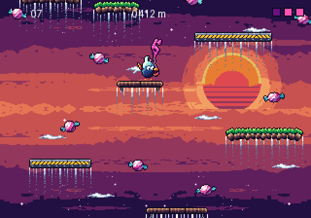
Fall, steer right, fall, steer left; one hit taken
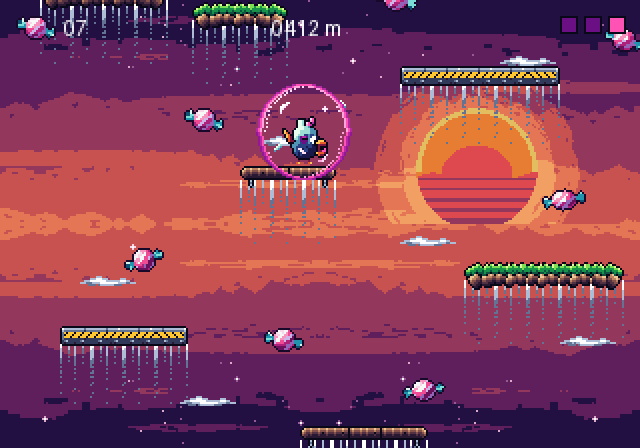
Two hits taken, shield up (the fresh bubble hides the torn skin)
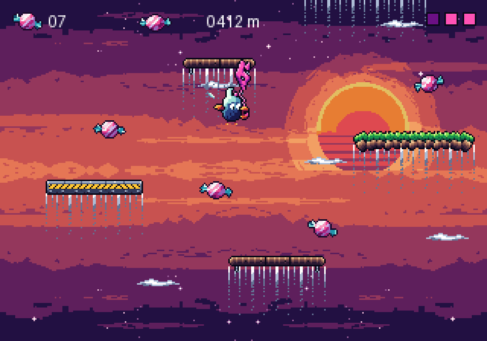
Still, 3x, falling
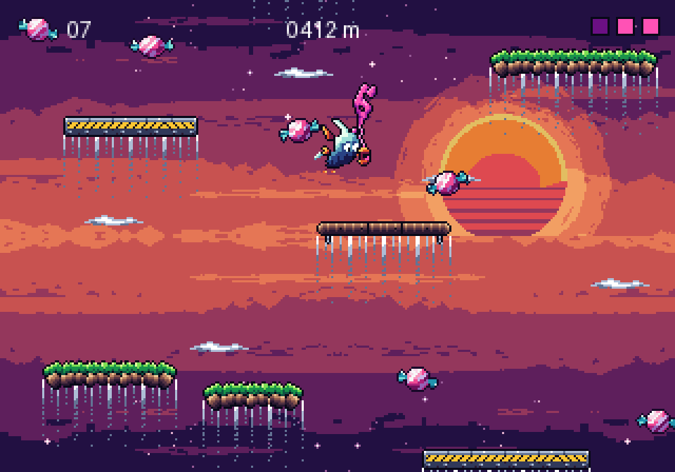
Still, 3x, steering right
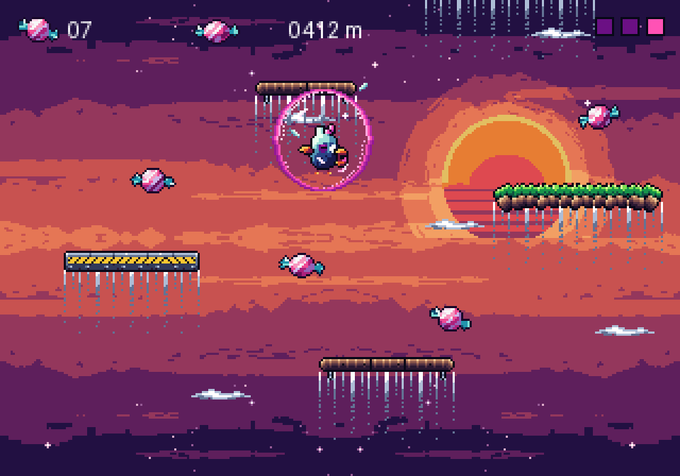
Still, 3x, shield
The four fixes: old on the left, new on the right
1. Burst gum. Old: three frames, read as a heart on a string. New: torn skin with split tatters, a notch and a torn hole, four flutter frames, stuck to the upper beak by a stretched strand
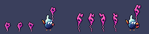
Same at 1x 2. Screaming beak. Old 4 x 3 pixels. New 7 x 10: mandibles flung apart, dark throat, tongue; three wing frames
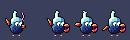
Same at 1x
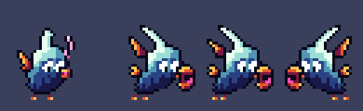
3. Lean. Old: 1 to 2 pixel shear. New: own pose, body tilted, crest swept back, wing flung up (two frames), tail fan; last frame is the mirror for steering leftSame at 1x 4. Crash. Old: 32 x 10 pancake. New: splat frame, then a dazed loop with one crossed eye, one ring eye, tongue out, legs twitching in the air
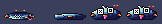
Same at 1x
Falling bird animations
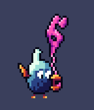
Fall loop, no hits
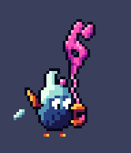
After hit one: bent crest, lump, one loose feather drifting up
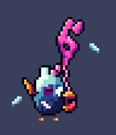
After hit two: snapped crest, black eye, plaster, two loose feathers
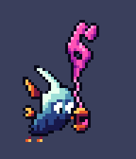
Steer right
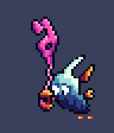
Steer left (mirrored)
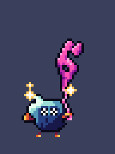
Hit: bounce and stun with stars circling the head, then back to falling
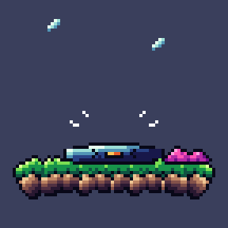
Third hit: splat, dazed loop, stars, feathers settling, torn skin limp on the platform
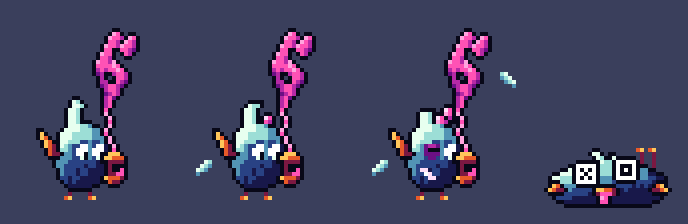
Three battered states and the dazed crash pose, 4x
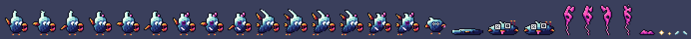
All bird frames, torn skin frames, stars, feathers
Platforms
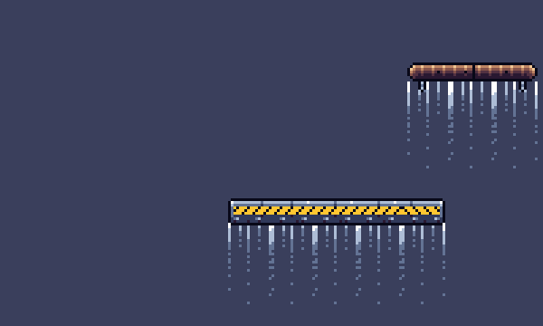
Streak tiles under each platform
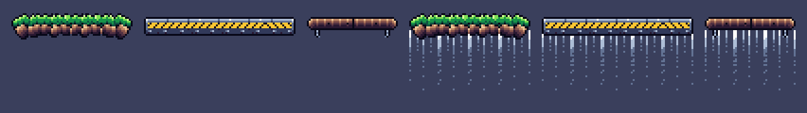
Rock island, steel girder, wooden plank: plain, then with streaks
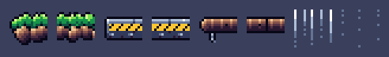
Tiles: left cap and middle per type (right cap is the left cap mirrored), two streak tiles
Gum pickup and catch sparkle
Reused unchanged from the Gum Trip pickup sheet: no new tiles.
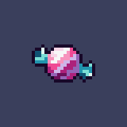
Spin
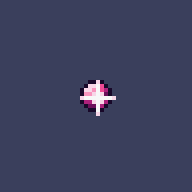
Catch
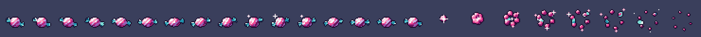
All frames
Shield bubble
Review fixes: the dotted inner ring now sits only on the lit and reflected arcs; the pop flash keeps the rim shading instead of a flat white ring; gum globs and droplets spray out between the rim shards.